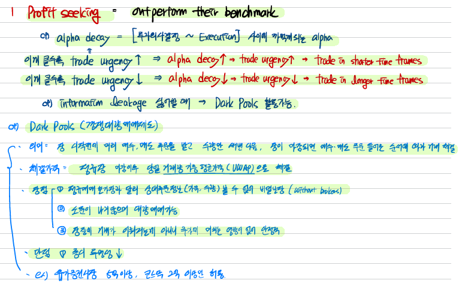

Trading, Performance Evaluation, and Manager Selection
LOS 25.a: Discuss motivations to trade and how they relate to trading strategy.
Exam Focus
This topic review evaluates the trade execution component of the portfolio management process. Understand trade motivations, trade characteristics, and how these-in conjunction with market conditions-determine the most appropriate approach for a trade. Crucial to determining the optimal trading approach are the costs of trading, which are both explicitly observable (i.e., commissions and fees) and implicitly part of the trading strategy (i.e., execution cost and opportunity cost).
The four categories of trade motivation include the followings:
- Profit seeking
- Risk management and hedging needs
- Cash flow needs
- Corporate actions, margin calls, and index reconstitution
Profit seeking

Alpha decay is deterioration in alpha once an investment decision has been made. Managers with higher rates of alpha decay (e.g., managers trading on daily new flow) need to trade in shorter time frames; therefore, they have greater trade urgency. Other managers (e.g., managers with insights based on long-term company fundamentals) will have lower rates of alpha decay and therefore a lower trade urgency.
To minimize information leakage (i.e., alert the market to the security mispricing through their trading activity), managers may execute their trade in multiple venues. This may include less transparent venues called dark pools, which are trading systems with low pretrade transparency. Orders entered into a dark venue cannot be seen by other market participants before the trade occurs; hence, users know that there is no risk of information leakage. The disadvantage of dark pools is that traders can’t see orders on the other side of the trade, so they do not know the pretrade likelihood of execution. An execution venue with high pretrade transparency is called a lit venue. National stock exchanges are examples of lit venues.
Risk management and hedging needs

Portfolios need to be traded to maintain targeted risk exposures. This may be simply rebalancing the portfolio after a change in market conditions (e.g., a fixed income manager targeting a fixed duration level), or hedging to remove a risk factor from a portfolio (e.g., an equity manager hedging foreign exchange exposure). Derivatives trades may be used to facilitate risk management; However, this does require that appropriate liquid derivative contracts exist and that the fund mandate permits their use.
Cash flow needs

These trades are primarily caused by investor subscriptions into, and redemptions out of, the fund.
Funds with less liquid holdings will find it difficult to invest new client funds in a short time frame. This may lead to cash drag, where the low returns of cash cause the fund to underperform the benchmark. To avoid cash drag, a manager may engage in equitization strategies where liquid securities such as exchange-traded funds (ETFs) or derivatives are used to gain market exposure while the investment in underlying securities occurs over time.
Client redemptions are usually based on the fund’s net asset value (NAV) using the closing prices of securities.
Corporate actions, margin calls, and index reconstitution

Corporate actions on portfolio holdings such as mergers, acquisitions, or spinoffs may require portfolio trading.
Margin calls on leveraged positions as well as derivatives positions that are suffering losses may require urgent sales of portfolio holdings.
When the benchmark index is reconstituted, managers may need to execute trades to reflect the change. This is particularly important for index-tracking funds. Since the value of the index benchmark usually is based on closing prices, trading at closing prices minimizes the fund’s tracking error to the benchmark.
LOS 25.b: Discuss inputs to the selection of a trading strategy.

Trading strategy inputs
Order characteristics

These include side, absolute size, and relative size.
- Side refers to the direction of the order (buy, sell, short buyback (cover), or short sell). A list of only buy orders or only sell orders will have greater market risk exposure compared to a list of buys and sells with offsetting market risk exposures.
- Absolute size refers to the number of securities being traded. larger orders will have a higher market impact cost than smaller orders.
- With relative size, managers will often consider order size as a percentage of average daily volume (ADV). Orders that constitute a higher percentage of ADV are expected to have higher market impact costs.
Security characteristics

- Security type. Different security types [e.g., underlying securities, ETFs, American depositary receipts (ADRs), global depositary receipt (GDRs), derivatives, and foreign exchange (FX) contracts] trade in different markets with different costs, regulations, and liquidity.
- Short-term alpha. For active managers, a high rate of alpha decay requires a more urgent trade strategy. A manager will also have higher urgency in adverse market conditions (i.e., buying into a rising market or selling into a falling market).
- Price volatility. High price volatility implies high execution risk, defined as the risk that an adverse price movement will occur over the trading horizon.
- Security liquidity. Greater liquidity decreases execution risk and market impact cost. Narrow bid-ask spreads and large volume available for trading (i.e., market depth) are two key indicators of high liquidity.
Market conditions

Traders need to reflect changes of volatility and liquidity in their expectations. Lower liquidity suggests longer trading horizons; however, higher volatility might cause investors to speed up trades and incur higher costs to avoid execution risk of adverse price movements.
Individual risk aversion

A portfolio manager/trader with higher risk aversion is typically more concerned about the market risk of adverse movements in security prices than market impact costs and therefore will trade with more urgency.

LOS 25.c: Compare benchmarks for trade execution.
Reference prices
Reference prices are used to determine expected trading costs, which enables managers/traders to select the optimal strategy for a trade.
Pretrade benchmarks
- Decision price - 사기로 결정한 시점의 가격
- Previous close - This is the closing price on the previous day (often used as a proxy for decision price by quantitative managers using systematic rules-based, data-driven strategies).
- Opening price - This is the opening price on the day (often used as a proxy for decision price for subjective fundamental managers investing in securities for a long-term alpha, since it does not punish or reward traders for news released overnight when markets were closed). Note that if a trade is to be entered into an opening auction, which sets the day’s opening price of a security at a trading venue, then this opening auction price is not a good benchmark since it can be affected by the trade.
- Arrival price - This is the price of the security when the order is sent to the market for execution.
Intraday benchmarks
- Volume-weighted average price (VWAP) - This is defined as the average price of all trades, weighted by volume, over the trading horizon. Managers may use the VWAP benchmark when they want to participate with volume patterns over a day.
- Time-weighted average price (TWAP) - This is the equal-weighted average price of all trades executed over the trading horizon (i.e., TWAP ignores volume). TWAP may be appropriate for managers who wish to remove the impact of outliers (i.e., large trades that occur at the highs or lows of the day) since they believe they are less able to participate in these extreme trades. It is also appropriate in market environments with highly fluctuating volume throughout the day.
- thinly traded and high volatility stock에도 적합
Posttrade benchmark
Posttrade benchmarks are determined after trading has been completed. The most frequently used posttrade benchmark is the closing price, often used by managers who wish to execute at the closing price to reduce the tracking error of the fund. A drawback of this benchmark is the since the closing price is not known until after the trading is completed, a manager cannot assessing trading performance during the trading horizon.
Price target benchmark
Price target benchmarks are prices used by profit-seeking managers aiming to earn short-term alpha, related to the manager’s view of the fair value of the security.
LOS 25.d: Recommend and justify a trading strategy (given relevant facts).
Trading strategy selection
Short-term alpha
- Objective - trade short-term mispricing in a liquid equity market
- Urgency - high
- Reference prices - price target benchmark linked to the manager’s estimate of fair value combined with an arrival price benchmark for orders when placed in the market.
- Execution method - computer algorithm
Long-term alpha
- Objective - Trade over the long term due to changes in fundamental conditions.
- Urgency - low
- Reference prices - difficult to use in practice
- 거래를 잘 했는지 알기 어려움
- Execution method - sell securities gradually over a few weeks in small parts to avoid information leakage and pressure on dealer’s prices.
Risk rebalance
- Objective - Rebalance or hedge risk exposure (e.g., reduce risk levels in liquid FX markets by liquidating long and short positions to bring fund volatility down to a target level).
- Urgency - low
- Reference prices - TWAP
- Execution method - algorithmically target TWAP over the next couple of days.
Cash flow driven (client redemption)
- Objective - liquidate the holding to meet client redemptions
- Urgency - the trade needs to be completed by the end of the trading day
- Reference prices - closing price
- Execution method - Execute a reasonable amount of liquidity in the closing auction; execute the reminder before the close of trading (e.g., at VWAP)
- VWAP - 오늘 전부 청산해야 함
Cash flow driven (new trade mandate)
- Objective - invest new client funds (e.g., invest large amount with a mandate to track a small-cap index with a 3% tracking error). Performance measurement will begin at the current day’s closing price.
- Urgency - liquidity is too low to execute in underlying securities by the end of the day, but immediate exposure is required by the client. Liquidity index futures contracts exist.
- Reference prices - closing price
- Execution method - obtain immediate exposure to index through a long position in index futures to eliminate cash drag. Build underlying stock positions over time to reduce market impact, while simultaneously unwinding the future position.
- There are two issues with this method:
- There may not be a closing auction for the futures contract, in which case the futures trade would need to be done as close to the market close as possible.
- The mandate must allow derivatives positions.
LOS 25.e: Describe factors that typically determine the selection of a trading algorithm class.
Trade execution and strategy implementation
High-touch approaches
High-touch approaches involve high levels of human involvement. This is usually required for large trades (known as block trades), since finding the other side to larger trades is more difficult, or in less liquid markets. High-touch approaches include:
- Principal trades (broker risk trades) - This is where dealer or market makers assume all or some of the risk relating to executing the order, which is priced into their spread. Quote-driven, over-the-counter (OTC), or off-exchange markets (real estate market이라고 생각하면 편함) are primarily principal trade markets. Principal trades also include request-for-quote (RFQ) markets where market makers do not provide continuous quotes, but only do so on request.
- broker가 거래를 떠안음
- Quote-driven market = price-driven market = dealer market → dealer가 주도
- Agency trades - This is where the broker finds the other side of the trade, and risk for order execution remains with the portfolio manager/trader.
- too low liquidity
- large volume
- too urgent
Electronic trading
Electronic trading involves trading via computer and is used in more liquid markets. Trading here is typically order driven in that electronic systems allow buyers and sellers to advertise their limit orders in a central limit order book. Electronic trading generally involves direct market access (DMA) and/or algorithmic trading. DMA allows buy-side portfolio managers/traders to access the order book of the exchange directly through a broker’s technology infrastructure.
- order-driven market = auction market
- 구매자 주도
- DMA는 1) when urgent 2) small trades
Algorithmic trading
Algorithmic trading is the use of programmed rules to electronically trade orders, primarily used for two purposes: profit seeking and trade execution.
Profit-seeking algorithms use real-time market data to determine which securities to buy and sell, and are employed by electronic market makers, quantitative funds, and high-frequency traders.
- 좋은 가격에 거래 할 수 있을까?
Execution algorithms trade according to the rule specified by the manager to meet their objectives.
- 전부 체결할 수 있을까?
Scheduled algorithms-percent-of-volume (POV), VWAP, and TWAP algorithms. These execute trades using rules driven by historical volumes or specified time periods.
- POV algorithms (a.k.a. participation algorithms) send orders according to a volume participation schedule (e.g., “participate as 5% of traded volume”).
- Advantage: They automatically exploit increased liquidity when available.
- cheap and efficient
- Disadvantage: They continue to trade at any (potentially adverse) price, and may not fill the order in a specified time if there is a lack of trading.
- Advantage: They automatically exploit increased liquidity when available.
- VWAP and TWAP algorithms are time-scaling algorithms. VWAP algorithms attempt to match the VWAP price for the period by carving up the trade and sending orders based on historical intraday volumes. The usual intraday volume profile is to trade more at the open and close and less in the middle of the day. TWAP algorithms perform a similar task; however, they ensure an equal number of shares is traded in each time period (e.g., each hour).
- Advantage - They ensure that a specified number of shares are executed in a specified time period.
- Disadvantage - They may force trades in times of low liquidity or trade too little in times of high liquidity.
Liquidity-seeking algorithms (a.k.a. opportunistic algorithms) aim to take advantage of favorable liquidity conditions when offered by the market. For example, for a buyer, this algorithm would wait until a larger seller appeared and then enter a market order. These order use both lit and dark venues.
Arrival price algorithms seek to trade close to market prices prevailing at the time the order is entered. These algorithms will trade more aggressively (i.e., faster) than other algorithms to trade more shares at close to the arrival price.
Dark strategies/liquidity aggregators execute trades in dark pools, with aggregator algorithms attempting to optimize trading across multiple dark venues.
Smart order routes (SORs) are algorithms that determine the best destination (either lit or dark) to route an electronic order to get the best result. SORs focus on getting the best price for market orders, or the highest probability of execution for limit orders.
Which algorithm?
Scheduled algorithm
Scheduled algorithms are appropriate for relatively small orders in liquid markets for managers with less urgency (i.e., greater risk tolerance for longer execution periods) and/or who are concerned with minimizing the market impact.
Liquidity-seeking algorithm
Liquidity-seeking algorithms are appropriate for larger orders in less liquid markets with higher urgency while trying to mitigate the market impact. They are also appropriate when a manger is concerned that displaying limit orders may lead to information leakage, or when liquidity is typically thin with sporadic episodes of high liquidity.
Arrival price algorithm
Arrival price algorithms are appropriate for relatively small orders in liquid markets for managers who believe prices are likely to move against them during the trade horizon, and therefore wish to trade more aggressively. They are also appropriate for more risk-averse managers who want to minimize execution risk.
Dark strategy/liquidity aggregator
Dark strategies/liquidity aggregators are appropriate for large orders in illiquid markets, and arrival price or scheduled algorithms would likely lead to high market impact. Since there is a lower change of execution in dark pools, these strategies are for managers that do not need to execute the full order immediately (less urgency).
SOR
SORs are appropriate for small market orders with low market impact where the market can move quickly, or for small limit orders with low information leakage where there are multiple potential execution venues.


Clustering
Clustering is a machine learning technique whereby a computer learns to identify which algorithm is optimal for different types of trades based on the key features of trades. the term clustering refers to the technique of grouping trades together with similar attributes.
High-frequency market forecasting
High-frequency market forecasting attempts to model short-term market direction.
LOS 25.f: Contrast key characteristics of the following markets in relation to trade implementation: equity, fixed income, options and futures, OTC derivatives, and spot currency.
Characteristics of key markets
Equity
Equities are usually traded on stock exchanges (lit markets) and dark pools. Equity markets are the most technologically advanced, with most of the trading executed electronically, and the use of algorithms is commonplace.
Fixed-income markets
Fixed-income markets tend to trade in a large number of heterogeneous securities, as many issuers have multiple issues outstanding. While the fixed-income markets tend to have low liquidity, typical order size is large. Due to these characteristics, trading is mostly conducted in dealer-based, quote-driven markets. Electronic RFQ systems are becoming more common; however, algorithmic trading is largely limited. Other fixed-income securities markets generally use high-touch execution methods-urgent trades would require a principal broker risk trade, while less urgent trades would use a broker-agent approach.
Derivatives
Electronic trading is common for exchange-traded derivatives. Algorithmic trading is not as common as for equities markets, and is used more for futures than for options. Buy-side traders generally use DMA.
OTC derivatives
OTC derivatives trading takes place in a dealer quote-driven market, usually implemented through high-touch approaches.
Spot foreign exchange
Spot foreign exchange trading takes place in OTC markets that use both electronic trading and high-touch broker approaches. The market works in three tiers: interbank, interdealer, and bank-to-client, with decreasing trade sizes and increasing spreads, respectively. For large urgent trades, RFQs are used with brokers. For large non-urgent trades, scheduled algorithms or high-touch agency approaches are used. Small trades are usually implemented using DMA.

LOS 25.g: Explain trade costs are measured and determine the cost of a trade.


Trade cost measurement
Trading costs are either explicit in that they are easily visible (e.g., commissions and fees) or implicit in that they are embedded in the transaction (e.g., market impact/execution risk). Total costs of trading can be measured using implementation shortfall (IS).
IS = paper return - actual return
The paper return is the return a hypothetical portfolio would have had if the trade were executed at the original decision price with zero cost. The actual portfolio return of the portfolio is net of all costs.

Execution cost occurs due to executing shares at a less favorable price than the original decision price. Execution cost can be further broken down into delay cost and trading cost.
- Delay cost is due to adverse price movements in the time between the portfolio manager submitting the order to the trader and the time the trader releases it to the market. This delay is usually due to the time it takes the trading desk to determine the optimal execution strategy for the trade.
- Trading cost is due to the market impact of executing the trade.
Opportunity cost is the cost of not trading any unfilled parted of the order.
Fixed fees are any explicit commissions or fees incurred in executing the trade.


LOS 25.h: Evaluate the execution of a trade.
Trade cost analysis is vital for portfolio managers to be able to assess the effectiveness of brokers, algorithms, and other strategies. Costs are evaluated versus specified price benchmarks, which vary depending upon the objectives of the manager/nature of the order. This benchmark price could be an arrival price, VWAP, TWAP, or the closing market price.
\[ \text{absolute cost (\$)} = side \times (\text{execution price} - \text{benchmark price}) \times \text{shares executed} \]
\[ \text{trade cost (bps)} = side \times \frac{(\text{execution price} - \text{benchmark price})}{\text{benchmark price}} \times 10000 \]

Regardless of the skill of the trader, buy orders in a rising market and sell orders in a falling market incur positive trading costs due to adverse price movement. To remove the impact of market movements on trade costs, traders can use market-adjusted cost.
\[ \text{index cost (bps)} = side \times \frac{\text{index VWAP} - \text{index arrival price}}{\text{index arrival price}} \times 10000 \]
Recall that the arrival price is the price of a security when an order is first submitted to a market.
The market-adjusted cost of the trade is given by the following expression.
\[ \text{market-adjusted cost (bps)} = \text{arrivale cost (bps)} - \beta \times \text{index cost (bps)} \]

Added value
\[ \text{added value (bps)} = \text{total actual cost} - \text{estimated pretrade cost (bps)} \]
Remember that a negative cost is a benefit.
LOS 25.i: Evaluate a firm’s trading procedures, including processes, disclosures, and record keeping with respect to good governance.
Trade governance
Trade policy has four key areas: 1) the meaning of best execution, 2) the factors that determine the optimal trading approach, 3) a listing of approved brokers and execution venues, and 4) details of the monitoring processes used by the asset manager.
Meaning of best execution
Best execution is a general term used by regulators to describe the duty of asset managers to seek the best possible result for clients when trading their assets.
- Execution price
- Trading costs
- Speed and likelihood of execution and settlement
- Order size and liquidity
- Nature of the trade (e.g., urgency of the trade)
Note that best execution does not simply mean seeking the best price or trading at the lowest cost.
Factors that determine the optimal execution approach
- Urgency and size of order
- Liquidity of security (ADV) and the nature of security (e.g., standardized vs. customized)
- Characteristics of available execution venues.
- Investment strategy objectives (e.g., long term vs. short term in nature)
- Reason for the trade
New regulations called MiFID II (Markets in Financial Instruments Directive) have effectively prohibited the use of soft-dollar arrangements in Europe.
As discussed earlier, different asset classes have different methods of trading. For example, equities and exchange-traded derivatives are more likely to be traded using algorithms than fixed-income products, which are likely to be traded using a more high-touch approach.
List of eligible brokers and execution venues
The best practice is to establish a best execution monitoring committee (BEMC) consisting of portfolio execution, compliance, and risk personnel that is responsible for maintaining, updating, and distributing the list to parties involved in trade execution.
- High quality of service in terms of competitive execution price or speed of service/trade size capacity
- Financial stability to mitigate counterparty risk
- good reputation for ethical behavioral
- adequate settlement facilities
- competitive explicit costs such as commissions
- willingness to commit capital to principal trades when required for less liquid securities.
Process for monitoring execution arrangements
Exam focus
Performance evaluation of a portfolio is important to managers, sponsors, and clients who need to quantify performance and understand key drives of both risk and return.
LOS 26.a Explain the following components of portfolio evaluation and their interrelationships: performance measurement, performance attribution, and performance appraisal.
Performance evaluation
In a large institutional portfolio, it is common to have multiple investment managers where decisions are made by both the fund sponsors as well as by individual managers within the fund that affect portfolio performance. Performance evaluation can deconstruct returns to quantify which decisions added or subtracted value for the fund.
The fund sponsor’s perspective will capture all value added or lose, while the manager’s perspective will focus only on what a manager did to add or lose value for the fund.
Macro view - sponsor’s perspective
Micro view - manager’s perspective (mandate에 맞게 운용하였는지)
Components of performance evaluation
Performance measurement
Performance measurement serves as the initial foundation phase and calculates both the return and the risk of the fund over specified time period. It is imperative to determine, before any performance evaluation analysis, if the portfolio will be compared to a benchmark (relative performance) or to a target return percentage that is specified in advance by the portfolio manager (absolute performance).
성과측정
Performance attribution
Performance attribution determines the key drivers that generated the account’s performance.
Where performance comes from
Performance appraisal
Performance appraisal determines whether the performance was affected primarily by investment decisions, by the overall market, or by chance.
우연과 실력을 판단
LOS 26.b: Describe attributes of an effective attribution process.
LOS 26.c: Contrast return attribution and risk attribution; contrast macro and micro return attribution.
Return attribution & Risk attribution
Return attribution evaluates the impact of the active portfolio management decisions on the fund’s investment returns.
Risk attribution is the parallel of return attribution but analyzes the impact of the portfolio manager’s active investment decisions on portfolio risk.
Micro attribution vs. Macro attribution
Performance attribution is extremely flexible and can be analyzed at both the fund sponsor and the individual portfolio manager level.
Micro attribution analyzes the portfolio at the portfolio manager’s level and seeks to verify that the portfolio manager did what they said they would and to understand the drivers of the portfolio’s return.
Macro attribution analyzes investment decisions at the fund sponsor’s level; it’s commonly used with institutional investing.
LOS 26.d: Describe returns-based, holdings-based, and transactions-based performance attribution, including advantages and disadvantages of each.
Performance attribution-returns-based, holdings-based, and transactions-based
Returns-based attribution regresses total portfolio returns against major risk factors (for example, systematic risk, size, value) to identify the active bets of the manager and their impact on active returns.
- Advantages
- easy to implement
- does not require holdings data
- Disadvantages
- least accurate because does not consider underlying holdings
- returns data can be manipulated
Holdings-based attribution uses beginning-of-period portfolio holdings to assess the active sector/stock selection bets of the manager and their contribution to active return. This method does not adjust for portfolio changes made during the evaluation period; hence, the output may not fully reconcile to overall portfolio returns for a manager with high turnover. This mismatch is referred to as a ‘timing’ or ‘trading’ effect, which can be reduced by using shorter evaluation periods.
- Advantages
- More accurate than returns-based because considers underlying holdings
- Disadvantages
- Needs data on fund holdings
- Mismatch due to trading effect-not appropriate for high turnover active funds with long evaluation periods
Transactions-based attribution improves upon the holdings-based attribution by including the impact of any trades executed during the evaluation period.
- Advantages
- most accurate method
- Disadvantages
- highest data requirements
- highest complexity

LOS 26.e: Interpret the sources of portfolio returns using a specified attribution approach.

Arithmetic attribution and geometric attribution
All the attribution models that follow in this reading are arithmetic models, which is representative of the fact that a vast majority of performance appraisal practitioners use arithmetic attribution.
LOS 26.h: Identify and interpret investment results attributable to the asset owner versus those attributable to the investment manager.
The Brinson-Hood-Beebower (BHB) Method
Attribution of the value added by a fund sponsor’s decision to allocate to asset classes, styles, and individual styles if referred to as a micro attribution.
\[ \text{portfolio return} = \Sigma^{n}_{i = 1}{w_{i}R_{i}} \]
\[ \text{benchmark return} = \Sigma^{n}_{i = 1}{W_{i}B_{i}} \]
The allocation effect measures the value added/subtracted through the decision to overweight/underweight a segment versus the benchmark.
- Benchmark 대비 weighting 평가
\[ A_{i} = (w_{i} - W_{i}) \times B_{i} \]

The selection effect measures the value added/subtracted through selecting investments in the portfolio different from those of the benchmark.
\[ S_{i} = W_{i} \times (R_{i} - B_{i}) \]
The interaction effect measures the impact on active return of the allocation and selection effects acting together.
\[ I_{i} = (w_{i} - W_{i}) \times (R_{i} - B_{i}) \]
The Brinson-Fachler (BF) method

\[ \text{allocation effect, } A_{i} = (w_{i} - W_{i}) \times (B_{i} - B) \]
In practice, the BF model tends to be the more popular model.


Macro attributions vs. Micro attribution


The internal investment staff of the endowment would be responsible for tactical deviations from strategic asset allocation and the selection of external portfolio managers. Together, the investment committee and the internal investment staff would be referred to as the fund sponsor. Conducting a performance attribution on the decisions made by the fund sponsor is called a macro attribution.
The BHB and the BF model attributions in the previous section were macro attributions. They looked at the value added through the decisions made by the sponsor to overweight/underweight different styles of manager versus the benchmark and the value added by the sponsor’s ability to select good managers in these styles.
Further down the investment decision-making structure are individual portfolio managers (either internal or external to the endowment) making decisions to overweight/underweight segments (e.g., substyle/sector/geography) of their portfolio to generate an active return. A performance attribution applied to these decisions made at the individual investment-manager level is called micro attribution.
Using the BF model, the allocation effect for a micro attribution calculates the allocation effect of the size bets made by the growth and value managers. Recall that the allocation effect is calculated as:
\[ \text{allocation effect, } A_{i} = (w_{i} - W_{i}) \times (B_{i} - B) \]
Recall that the selection effect is formulated as:
\[ S_{i} = W_{i} \times (R_{i} - B_{i}) \]
Recall that the interaction effect is formulated as:
\[ I_{i} = (w_{i} - W_{i}) \times (R_{i} - B_{i}) \]
The total allocation + selection + interaction effect is the total active return of the portfolio. Note that this is the same as the macro-attribution output.
- interaction, selection을 묶어서 계산하는 경우도 있음
In later attributions, the reading presents the selection and interaction effect together rather than individually.

When the micro attribution is conducted on a single stock, the allocation effect actually represents the selection effect (because an allocation to a single security is really a stock-selection decision), and the selection effect represents the market timing and transaction costs of the manager with respect to the individual security.
Factor-based return attribution
regression analysis, exposure analysis
The Carhart model calculates the excess return from active portfolio management investment decisions by determining the impact on the portfolio due to the following factors: 1) market index (RMRF), 2) market capitalization (SMB), 3) book value to price (HML), and 4) momentum (WML)


Looking at the benchmark the sensitivity to RMRF of 1 suggests that the benchmark is a diversified index. The negative coefficient of the benchmark’s sensitivity to SMB indicates the benchmark has a large-cap focus tilt. We can summarize the benchmark as large-cap blend (no tilt toward growth or value) that does not use momentum.
To analyze the investment decisions by the portfolio manager, review column 1 (portfolio) and column 3 (different between portfolio and benchmark). The portfolio exhibits a value tilt but closely resembles the benchmark on the other factors.
The next step in the attribution analysis is to determine if the value tilt taken by the portfolio manager added or detracted value from the portfolio. From the factor sensitivities table, the value tilt contributed 1.29%, or over 78% of the total realized active return for the portfolio. The other effects were minor compared to the value tilt taken by the portfolio manager. Finally, the portfolio manager’s effectiveness at stock picking (security selection) detracted slightly (-0.10%) from the portfolio’s returns.
LOS 26.f: Interpret the output from fixed-income attribution analysis.
Fixed-income return attribution
- exposure decomposition - duration based (interest rate exposure)
- yield curve decomposition - duration based (duration exposure)
- yield curve decomposition - full-repricing based
Exposure decomposition-duration based
- Duration - for example, a manager the expects the yield curve to shift down would increase the duration of the portfolio versus the benchmark.
- Curve shape - a manager could position the portfolio to outperform by correctly anticipating a change in the shape of the yield curve-for example a steepening of the curve.
- Sector selection - a manager that believes that corporate spreads will narrow, leading to corporate bonds outperforming government bonds, would increase exposure to the corporate bond sector.
- Bond selection - a manager could overweight individual bonds that are expected to outperform the benchmark.

- The total return of the portfolio was 2.42%. The total return of the benchmark was 2.56%. The purpose of this attribution is to explain why the active return of the portfolio was 2.42% - 2.56% = -0.14%
- The overall portfolio duration was 4.84, versus an overall benchmark duration of 3.85. This implies that the portfolio would outperform if the yield curve experienced a parallel shift down. The manager achieved this higher duration through having a higher total weight in the medium duration bucker (60%) versus the benchmark (44%).
- The manager was overweight corporate bonds in the portfolio (65%) versus the benchmark (45%). This implies that the manager expected corporate bond spreads to narrow, leading to corporate bonds outperforming government bonds.

- Duration: The higher duration active position of the manager generated positive outperformance of 0.33%. The manager was correct to extend the duration of the portfolio, which implies that the yield curve did indeed fall.
- Convexity: 39 bps of active return was lost due to changes in the shape of the yield curve. Because the manager was overweight higher duration assets, this suggests that medium yield rose and short yield fell. This implies a steepening of the yield curve.
- Sector allocation: 8bps were lost because the manager overweighted the corporate sector. This implies that, contrary to the manager’s expectations, corporate spreads widened during the period.
- Benchmark following: the manager did not engage in active bond selection during the period.
Yield curve decomposition-duration based
- Yield or income - the return earned through collecting the coupon income
- Roll - the impact of time passing and the bond ‘rolling down’ a stable yield curve
- Shift - the impact of a parallel shift in the yield curve estimated through duration and convexity
- Shape - the impact of a change in the yield curve, such as a change in slope or curvature
- Spread - the impact of a change in spread for either a sector, a specify security or both
- Residual - unexplained movements due to the estimation involved in assessing the components above (in particular, duration and convexity)
The duration-based yield curve decomposition decomposes the active return of a portfolio manager to these sources of return. For example, a manager with an overweight position in high-coupon, high-yield corporate bonds will expect to have a positive contribution to active return from the yield component due to the high coupon and the spread component due to a presumed expected narrowing of the credit spread. Note that should their holdings default on coupons, or spreads in fact widen, then these effects would be negative, indicating that the manager lost value versus the benchmark due to the overweight position in high-yield corporate bonds.
Yield curve decomposition-full repricing
Instead of estimating the impact of active bets using duration and yields to maturity, the full repricing approach breaks down the active return of the manager using individual spot rates for cash flows occurring at different maturity.
The full repricing approach breaks the active returns of the manager down to the individual cash flows that generated the active returns. As such, it is the most precise of the three fixed-income attribution methods and can accommodate the broadest range of instruments and yield curve changes. The drawback of the full repricing method is that it is the most complex method and, therefore, is least likely to be easily understood by the recipient of the output.
LOS 26.g: Discuss considerations in selecting a risk attribution approach.
risk attribution

LOS 26.h: Discuss uses of liability-based benchmarks.
Liability-based benchmarks
A more frequent benchmark in institutional investing is the liability-based benchmark, which is likely to be used by fund sponsors and portfolio managers when a firm has a specific liability to pay in the future. (e.g., a defined benefit plan). A liability-based benchmark focuses on the cash flows necessary to satisfy the liability and frequently limits the investment choices available to the portfolio manager (e.g., equity and fixed income only). Frequently used assets within a liability-based benchmark include nominal bonds, inflation-adjusted bonds, and high-quality stocks.
LOS 26.j: Describe types of asset-based benchmarks.
Seven characteristics of a valid benchmark (SAMURAI)
- Specified in advance
- The benchmark is known to both the investment manager and the fund sponsor. It is specified at the start of an evaluation period.
- Appropriate
- The benchmark is consistent with the manager’s investment approach and style.
- Measurable
- Its value and return can be determined on a reasonably frequent basis.
- 세부사항까지 measurable 해야 함
- Unambiguous
- These are clearly defined identities and weights of securities constituting the benchmark.
- Reflective of the manager’s current investment opinions
- The manager has current knowledge and expertise of the securities within the benchmark.
- manager의 feelingsappropriate이랑 헷갈릴 수 있음
- Accountable
- The manager(s) should accept the applicability of the benchmark and agree to accept differences in performance between the portfolio and benchmark as caused only by their active management.
- agree to accept the benchmark
- Investable
- It is possible to replicate the benchmark and forgo active management.
Asset-based benchmarks
Absolute
An absolute benchmark is a return objective that aims to exceed a minimum target return.
Advantages
- simple and straightforward benchmark
- specify in advance (o)
Disadvantages
- Absolute return objective is not an investable benchmark.
- appropriate, measurable, unambiguous, investable (x)
Broad market indexes
advantages
- Well recognized, easy to understand by client, and widely available
- Unambiguous, generally investable, measurable, and may be specified in advance.
- appropriate to use if it reflects the current investment process of the manager
- specify in advance, measurable, unambiguous, investable (o)
disadvantages
- manager’s style may deviate from the style reflects in the index (e.g., it is not appropriate to use the S&P 500 for a small-capitalization U.S. growth stock manager)
- appropriate (x)
Style indexes
advantages
- they are widely available, widely understood by clients, and widely accepted
- if the index reflects the manager’s style and it is investable, it is an appropriate benchmark
- specify in advance, investable, appropriate, measurable, unambiguous (o)
disadvantages
- some style indexes can contain weightings in certain securities and sectors that may be larger than considered prudent.
- appropriateness가 satisfied되지 않을 risk
- differing definitions of investment style can produce quite different benchmark returns, making them inappropriate benchmarks
factor-model-based
advantages
- it is useful in performance evaluation
- it provides managers and sponsors with insight into the manager’s style by capturing factor exposures that affect an account’s performance
- specify in advance (o)
disadvantages
- focusing on factor exposures is not intuitive to all managers or sponsors
- the data and modeling are not always available and may be expensive to obtain
- it may be ambiguous because different factor models can produce different outputs, leading to misspecification
- investable (x)
Returns-based
return rate을 mapping 해서 어디에 sensitivity가 있는지 확인
advantages
- generally easy to use and intuitive
- meets the criteria of a valid benchmark
- useful where the only information available is account returns
disadvantages
- the style indexes may not reflect what the manager own or what the manager or client would be willing to own
- return이 비슷할 수 있는데 return source가 다를 수 있음
- enough monthly returns would be needed to establish a statistically reliable pattern of style exposures
- small sample
- will not work when applied to managers who change style
Manager universes
중간만 해라
advantage
- it is measurable
disadvantages
- manager universes are subject to ‘survivor bias,’ as underperforming managers often go out of business and their performance results are then removed from the universe history.
- specify in advance, appropriateness, unambiguous, investable (x)
- Fund sponsors who choose to employ manager universes must rely on the compiler’s representations that the universe has been accurately compiled.
- They cannot be identified or specified in advance, so it is not investable thus, it’s not an acceptable benchmark.
Custom security-based
Custom security-based benchmarks are designed to reflect the manager’s security allocations and investment process.
직접 만듦
advantage
- meet all the required benchmark properties and all the benchmark validity criteria
- allows continual monitoring of investment processes
- allow fund sponsors to effectively allocate risk across investment management teams
disadvantages
- it can be expensive to construct and maintain
- a lack of transparency by the manager (e.g., hedge funds) can make it impossible to construct such a benchmark.
LOS 26.k: Discuss tests of benchmark quality.
\[ P = M + S + A = R_{m} + (R_{B} - R_{m}) + (R_{p} - R_{B}) \]

Benchmark quality evaluation
- 계산문제 주의
- if the benchmark is a broad market index (B = M), S = 0%, A = P - B
- If the portfolio is a (broad) market index (P = M), S = 0%, A = 0%
- index management (passive investing)
- 좋은 benchmark?
- P-M, B-M의 correlation이 높을 것B-M, P-B의 correlation이 0일 것


LOS 26.l: Describe problems that arise in benchmarking alternative investments.
개별적으로 benchmark를 알아야 함
Benchmark alternative investments
Hedge funds
Three general types of benchmarks could be considered for hedge funds: 1) broad market indexes, 2) risk-free rate, and 3) hedge fund peer universes.
Broach market indexes are not appropriate to use as a benchmark for hedge funds because hedge funds cover a wide range of investment strategies. In addition, hedge funds differ significantly from each other and can have wide asset allocation fluctuations in the long term, which makes the use of broad market indexes problematic. With hedge funds using leverage, short positions, and derivatives-plus their overall lack of liquidity, transparency, ability to monitor, and low or no correlation of returns with the broad market index-broad market indexes should not be used as a benchmark for hedge funds.
The risk-free rate with an added spread could be used for some hedge fund strategies that focus on arbitrage. (risk-free rate is irrelevant to hedge fund) As a result, the spread would need to be increased accordingly. Finally, as with broad market indexes, the lack of correlation of hedge fund returns and the risk-free rate makes the risk-free rate on unsuitable benchmark.
Hedge fund peer universes are not suitable because a specific peer group’s risk and return objectives are not likely to match those of a specific hedge fund. Additionally, peer universes are subject to backfill and survivorship bias. Finally, because of the frequent illiquidity of underlying assets in hedge funds, current pricing may not be exact and may be based on an appraisal or prior period price.
Real Estate
Many real estate benchmarks exist but they are not all suitable for real estate investments:
- The benchmarks are derived from a sample of the real estate universe, which means they are not completely representative of the real estate asset class.
- The performance of the index probably bears a very high correlation to the largest investments.
- Benchmark returns are self-reported, so some subjectivity and/or bias may be present.
- Benchmarks that are value-based could be biased toward the most expensive properties or geographical areas.
- There is a lack of comparability with benchmark returns given that some benchmarks use leverage while others do not.
- The indexes assume no transaction costs, full transparency, and normal liquidity, which is usually not the case; those factors would impact actual real estate returns.
Additionally, there is lack of consistency in the use of return measures. For example, the cash inflows and outflows for open-end funds are controlled by the investor, so time-weighted returns would be used. In contrast, the cash inflows and outflows for closed-end funds are controlled by the manager, so an internal rate of return (IRR) would be used.
Private equity
The metric used is usually IRR, taking into account all investment cash flows since inception plus the ending investment value. Key problems with such benchmarks include managers using different methods of valuation, which makes comparison more difficult. In addition, IRR may be biased by losses or gains occurring near the beginning of an investment.
Commodities
Benchmarks for commodity investments are usually based on futures as opposed to actual assets. This may result in significant differences between the benchmark and the commodity investments portfolio, which reduces the comparability.
Managed derivatives
Managed derivatives funds, often referred to as managed futures fund, use specific derivatives trading strategies to generate returns. Benchmarks are either strategy-specific or peer group-based. Peer-group benchmarks are similar those used for hedge funds and will potentially exhibit the same issues as hedge fund peer-group-based benchmarks such as survivorship bias.
Distressed securities
Given the illiquidity and severe lack of marketability of distressed securities, it is almost impossible to determine an appropriate benchmark. It is likely to require a significant amount of time to occur (if it even does) and that creates valuation problem (e.g., stable pricing).
- trade가 거의 없어서 real value와 market price의 괴리가 커짐
They may take into account numerous strategies so that suitability of indexes for a specific strategy is questionable. As well, the indexes may perform valuations at erratic intervals so the issue of stale pricing may not be solved.
LOS 26.m: Describe the impact of benchmark misspecification on attribution and appraisal analysis.
Appropriate choice of benchmark
The phrase garbage in, garbage out is appropriate to use regarding the impact of benchmark misspecification on attribution and appraisal analysis.
LOS 26.n: Calculate and interpret the Sortino ratio, the appraisal ratio, upside/downside capture ratios, maximum drawdown, and drawdown duration.
LOS 26.o: Describe limitations of appraisal measures and related metrics.
The final stage of the performance evaluation process is performance appraisal. Performance appraisal is designed to assess whether the investment results are more likely due to skill or luck.
- Sharpe ratio
- Treynor ratio
- Information ratio
- Appraisal ratio
- Sortino ratio
- Capture ratios (upside and downside)
- Drawdown (maximum drawdown, drawdown duration)
Treynor ratio
\[ T_{A} = \frac{\bar{R_{A}} - \bar{r_{f}}}{\hat{\beta_{A}}} \]
The Treynor ratio is similar to the Sharpe ratio, but the denominator for the former is measured by beta, so it only considers systematic risk rather than total risk like the latter. Therefore, with the Treynor ratio, the universe of appropriate benchmarks is limited to only those that assume efficient markets. The Treynor ratio is only useful in evaluating portfolios that have systematic risk and do not have unsystematic risk; in other words, such portfolios are well diversified.
Information ratio
\[ IR = \frac{E(r_{p}) - E(r_{B})}{\sigma(r_{p} - r_{B})} \]
The denominator is known as the tracking risk, or the variability in the portfolio performance with that of its benchmark.
Appraisal ratio
\[ AR = \frac{\alpha}{\sigma_{\epsilon}} \]

The appraisal ratio measures the ratio of active return to the volatility of the residual term, both derived from a factor-based regression.
A manager with a higher AR is generating more active return per unit of active risk (as represented by residual risk, also referred to the “standard error of the regression”) and is therefore a superior active manager according to this measure.
The standard error of the regression is the volatility of the error term in a factor-based regression. Hence, here is playing the role of active risk.
The AR is analogous to the information ratio-it looks at active return per unit of active risk. The only difference to the information ratio is that the AR uses a factor-based regression to estimate active return and active risk.
\[ \sigma_{i}^{2} = \beta^{2}\sigma_{m}^{2} + \sigma_{\epsilon}^{2} \]


Sortino ratio
The Sortino ratio only considers the standard deviation of the downside risk.
In practice, however, clients tend to be more concerned about volatility associated with negative returns.
\[ SR_{D} = \frac{E(r_{p}) - r_{T}}{\sigma_{D}} \]
the Sortino ratio is more appropriate for investments with non-normal (nonsymmetrical) return distributions. Positively skewed and negatively skewed investment strategies would both result in lower Sharpe ratios (e.g., higher standard deviation in the denominator), but only the negatively skewed investment strategy would result in a lower Sortino ratio (e.g., high semi-standard deviation in the denominator). Therefore, for investments that have nonsymmetrical or skewed return distributions, such as hedge funds or options, the Sortino ratio appears to be a more appropriate performance metric. However, a comparability problem exists with the Sortino ratio because the determination of MAR is subjective and specific to each investor.
Capture ratios (upside and downside)
Capture ratio > 1 → more skillful
\[ \text{capture ratio} = \frac{r_{p}}{r_{B}} \]
\[ \text{Capture ratio} = \frac{\text{upside capture ratio}}{\text{downside capture ratio}} \]
- upside capture ratio - the higher, the more skillful
- downside capture ratio - the lower, the more skillful
Capture ratios determine the manager’s relative performance when markets are up or down. Consider an up market where the index or benchmark return is positive. The question is whether the manager’s portfolio return is also positive and if it is above or below the benchmark return.
A capture ratio of 1 is indicative of a symmetrical return profile. Therefore, if the capture ratio > 1, then there is positively asymmetrical (convex) return profile in that there is greater upside capture than downside capture. Correspondingly, if the capture ratio < 1, there is a negatively asymmetrical (concave) return profile in that there is greater downside capture than upside capture.
Drawdown (maximum drawdown, drawdown duration)
Drawdown is a measure, based on past performance, that calculates the maximum loss incurred if an investor had invested at a peak valuation and subsequently liquidated at a trough valuation. Drawdown duration is the total time required to fully recover a drawdown; it is from when the drawdown commences up to when the cumulative drawdown is zero.

LOS 26.p: Evaluate the skill of an investment manager.
Example of attribution analysis


The manager underperformed the benchmark by 12 bps due to country weighting decisions. Although the manager made a good decision in underweighting the Netherlands by 4% because it underperformed the total benchmark by 2.34%, the manager made bad decision in all of the other countries. Overall, the manager was not successful with country weighting decisions.
The manager underperformed the benchmark by 56 bps due to stock picking decisions. although the manager selected outperforming stocks in the Netherlands and Belgium that earned a total of 32 bps, there was significant underperformance in France that lost 81 bps. Overall, the manager was not successful with picking stocks. Additionally, the selection effect was significantly greater than the allocation effect.
Example of appraisal analysis
Manager X’s volatility of returns (as measured by standard deviation) is only slightly below that of the benchmark.

Conclusion
Overall, Manager X was not able to demonstrate sufficient skill in investing as demonstrated by losses incurred due to poor country allocation and poor stock selection decisions, relative to the benchmark.
LOS 27.a: Describe the components of a manager selection process, including due diligence.
The investment manager selection process involves both quantitative and qualitative considerations, although the focus in the reading is primarily qualitative. Key areas of focus for the exam include Type I and II errors, capture ratios and drawdowns, and computing performance-based fees.
Manager selection process
Due diligence is the analysis and investigation in support of an investment decision, action, or recommendation. due diligence on investment managers must emphasize the sources and reasons behind the actual returns generated in the past. Then there must be an evaluation on the probability of repeatedly earning sufficient or better returns in the future using the same investment process. Overall, due diligence must consist of manager universe, quantitative analysis, and qualitative analysis.
Manager universe
The manager universe consists of only those managers who are suitable for the portfolio in terms of the objectives and constraints of the IPS, invest in the relevant style (e.g., value, growth, mixed) desired by the client, and will manage the portfolio with the appropriate balance between active versus passive approaches.
At the manager universe stage, there should not be any performance assessment; that will occur later during quantitative analysis. Instead, there must be an emphasis on the manager’s risk profile and whether or not it is a good fit for the portfolio’s requirements.
Quantitative analysis
Through performance attribution and appraisal, one can distinguish between managerial skills versus luck (e.g., external market factors). The capture ratio would examine performance in both good and weak market conditions. Finally, one must check for any significant drawdowns (i.e., peak-to-trough decline in percentage terms for a specific time period).
Qualitative analysis
Continuity of returns can be assessed by looking at the four Ps-philosophy, process, people, and portfolio.
LOS 27.b: Contrast Type I and Type II errors in manager hiring and continuation decisions.
Type I and II Errors
Hypothesis testing can be used. The null hypothesis is that there is no value added, therefore, to demonstrate that it is value added on a statistically significant basis, the calculated test statistic would have to be large enough so that the null hypothesis would be rejected.
As a result, there could be a Type I error whereby the null hypothesis is rejected when in fact, there was no value added. In other words, the hired or kept manager did not demonstrate sufficient skill. Alternatively, there could be a Type II error whereby the null hypothesis is not rejected, when in fact, there was value added. In other words, the manager who was not hired or the manager who was fired did demonstrate sufficient skill.


Type I error - incorrectly reject \(H_{0}\) → hiring and retaining bad managers
- 더 심각
- measurable, 조직이 망가짐
Type II error - fail to reject \(H_{0}\) → firing good managers
- not measurable
Type I errors receive much more attention than Type II errors. One reason may related to the notion of regret aversion by the decision maker, which is linked to an error of commission (a Type I error). Errors of commission are active decisions that result in explicit (or visible)costs. In contrast, Type II errors are errors of omission, so they result in implicit or opportunity (less visible) costs. Another reason is that Type I errors are easier to determine; for example, a manager’s relative performance can be measured against a benchmark. Such performance also impacts the decision maker’s compensation so additional care would be taken to reduce the risk of a Type I error. In contrast, Type II errors are difficult to determine; for example, how can one objectively determine how a manager (who was not hired) would have performed? Finally, Type I errors are much more visible to clients who can easily determine that their investments have underperformed the benchmark over a specific time period, for example.
Preventing Type II Errors
An excessive number of Type II errors would be indicative of a problem with the hiring and firing of managers. The obvious solution to minimizing Type II errors would be to track the subsequent performance of managers who were not hired as well as those who were fired.
Costs of Type I and II errors
Type I errors result in costs associated with retaining managers who are weak, while Type II errors result in costs associated with not retaining managers who are strong. Therefore, assuming two separate groups of managers (e.g., strong and weak), the greater the differences in sample size and mean, the greater the costs of Type I and II errors. The wider the dispersion of returns between strong and weak managers, the easier it is to distinguish between their relative skills. Therefore, it makes it less likely to have a Type I or II error which results in a lower expected cost of a Type I or II error.

In an efficient market, the dispersion of return distributions between the two groups is probably smaller due to greater difficulty in achieving alpha through active management, which would lessen the costs of hiring or retaining weak managers (Type I error).
If markets are mean-reverting, then Type I errors may occur when firing a poor performer, only to have performance improve subsequently or hiring a strong performer only to have performance deteriorate subsequently (Note: That is not a Type II error because the assumption is that the poor and strong performers have been accurately determined initially but it is the mean-reversion of the markets that leads to the Type I error). Type II errors occur in mean-reverting markets when strong managers are fired or not hired (e.g., they subsequently underperform when the market goes down) or managers who have weaker short-term performance (but have sufficiently strong long-term performance) are fired or not hired and they subsequently outperform when the market goes up.
LOS 27.e: Describe uses of returns-based and holding-based style analysis in investment manager selection.
Style analysis
Style analysis examines the manager’s risk exposures (e.g., industry, concentration, capitalization) in relation to an appropriate benchmark and changes in those exposures over time.
RBSA (return-based style analysis)
RBSA estimates the portfolio’s sensitivities to security market indexes for a set of key risk factors. One complication of RBSA is that the risk factors are estimated rather than using predetermined style categories. However, the approach is top-down in nature and little additional data is needed to perform the analysis so the computational approach is relatively easy.
RBSA lacks precision since it essentially assumes that there is a static portfolio for the period. As a result, it makes it difficult to ascertain the impact of multiperiod investment decisions for a given period, and could alter the breakdown of the sources of value added. The portfolio may also contain illiquid securities, so stale prices could understate risk exposure.
HBSA (holding-based security analysis)
HBSA looks at the actual securities included in the portfolio at one time. That allows one to estimate the current risk exposures using a more security-specific (bottom-up) approach. Overall, HBSA is most appropriate for equity-based strategies.
A key drawback of HBSA is the increased computational requirement as complexity increases and transparency decreases. HBSA uses a point in time analysis format that may not be useful in projecting into the future of if the portfolio has high turnover. Similar to RBSA, the presence of illiquid and nontraded securities results in stale pricing and that could understate risk exposure as well as decrease reporting timeliness.
LOS 27.d: Describe uses of the upside capture ratio, downside capture ratio, maximum drawdown, drawdown duration, and up/down capture in evaluating managers.
Capture ratios
Capture ratios determine how suitable a manager is with respect to the investor’s risk tolerance and time horizon. The upside capture ratio (UC) looks at capture when the benchmark has a positive return. Based on the benchmark return, UC that is higher (lower) than 100% is indicative of outperformance (underperformance). Conversely, the downside capture ratio (DC) looks at capture when the benchmark has a negative return. Based on the benchmark return, DC that is lower (higher) than 100% is indicative of out- (under-) performance.
The capture ratio (CR) = UC ratio / DC ratio. The CR is a measure of return asymmetry, > 1 = positive asymmetry (convex shape), and < 1 = negative asymmetry (concave shape).
Drawdown
Drawdown is the total peak-to-trough loss for a specified time period; maximum drawdown is the largest peak-to-trough loss during that time period. Drawdown duration is the total time from when the drawdown begins to when the total drawdown recovers to zero (the latter achieved with offsetting gains).
In comparing a long-only strategy (100% invested in S&P TR Index) versus a low-beta strategy (50% in S&P TR Index, 50% in 90-day T-bills), it is quite possible for the low-beta strategy to outperform the long-only strategy on a risk-adjusted returns basis. In other words, a low-beta strategy may have lower absolute returns but the lower risk in the form of lower drawdowns may result in better risk-adjusted returns.
LOS 27.e: Evaluate a manager’s investment philosophy and investment decision-making process.
Investment philosophy
Therefore, those managers will execute passive strategies and attempt to earn risk premiums instead. These risk premiums are the returns that are earned above the risk-free rate for bearing undiversifiable risks, also referred to as systematic or market risk. To earn risk premiums, passive strategies will target one or more specific systematic risk factors including equity risk, credit risk, liquidity risk, and volatility risk.
There are two broad types of inefficiencies to be considered: behavioral and structural. Behavioral inefficiencies are mispricings caused by other investors and their behavioral biases (e.g., trend-following). The mispricings are very short-term in nature and therefore, must be quickly exploited (sometimes within seconds) prior to the market correction. Structural inefficiencies occur because of laws and regulations which can make them long-term in nature.
Investment decision-making process
Idea generation
signal creation
An investment signal may be a piece of information that can be used to establishing an investment position to exploit an inefficiency. To effectively exploit inefficiencies, investment strategies must utilize unique information to have an informational advantage over other market participants.
Idea implementation
signal capture
Here the investment idea is transformed into an investment period (i.e., signal capture)
Portfolio construction
A fundamental question is what kinds of securities are used to construct the portfolio.
The portfolio allocations may be done quantitatively or qualitatively.
Stop losses are orders to sell a security once it reaches a certain price and can be as important risk management tool. Hard or soft stop losses may be used. The former involve automatic dispositions when a specific loss threshold is met and the latter involve subjective evaluations when a specified loss threshold is met.
Portfolio monitoring
LOS 27.f: Evaluate the costs and benefits of pooled investment vehicles and separate accounts.
Separately managed accounts (SMAs) and pooled investment vehicles are used to execute investment strategies. Pooled vehicles bring together the funds from all investors into one portfolio (e.g., mutual funds, ETFs, hedge funds) and there is no customization for any specific investor. SMAs hold the funds of one investor in a separate account so a key analysis is the cost-benefit trade-off of holding investments in a SMA.
Compared to pooled investments, SMAs have higher transaction costs but provide control, customization, tax efficiency, separate reporting, and greater transparency. The control is in the form of direct and legal ownership of the underlying securities by the investor. Therefore, there is extra protection given to the investor in case of a liquidity event or bankruptcy of the manager. As well, unlike pooled investments, the investor is not impacted by the redemption demands of other investors. In terms of customization, SMAs allow for the tailoring of client-specific objectives and constraints. Tax efficiency could be higher in SMAs because there is only payment of realized capital gains required. Investing strategies for SMAs can be tailored to minimize taxes paid by the individual investor. In terms of transparency, SMAs can provide an instantaneous snapshot or dashboard view of the investment holding at any given point. Polled investments may be able to do so but probably with a delay.
Customized SMAs require an extra layer of due diligence to evaluate security selection, portfolio construction, and operational issues.
LOS 27.g: Compare types of investment manager contracts, including their major provisions and advantages and disadvantages.
Liquidity
Closed-end funds and ETFs have the highest liquidity because they are traded intra-day. (listed) Open-end funds offer almost as much liquidity in that they are traded based on end-of-day NAV only.
Investments held in limited partnership structures (e.g., hedge funds, private equity and venture capital) usually involve investment capital that is tied up for more time. For example, hedge fund liquidity involves redemption frequency, lockup periods, notification periods, and gates.
Private equity and venture capital funds have the lowest liquidity because of capital calls; investors only receive returns after about five years into the 10-year average life of the funds. The manager may extend the life of the fund for up to two one-year periods, which further lowers liquidity.
Key advantages of limited partnership terms include ability to have a long investment horizon, thereby not allowing investors to overreact to short-term aberrations. As well, allowing for the earning of illiquidity premiums by investing in illiquid assets and not being forced to sell assets at depressed prices due to redemption requests.
Key disadvantages of limited partnership terms include the impaired ability to change portfolio allocations in response to changes in the market. As well, the impaired ability to meet sudden liquidity demands.
LOS 27.h: Describe the three basic forms of performance-based fees.
Management fees
An advantage of the investor paying fees based on AUM is that it rewards based on the manager’s skill and ability to grow the asset base. Many managers have declining percentage fees for larger accounts, so the AUM fee percentage is reduced with increased asset size, which reduces investors’ fees. Unfortunately, luck may play a significant role in the short-term growth of assets. Another disadvantage is that once the assets are attained by the managers, there is more incentive to retain the assets and earn the AUM fees (e.g., engage in safe strategies, such as indexing ) rather than take risks for the benefit of the investor.
Basic forms
symmetrical structure with full upside and downside exposures
- fee = base + performance sharing
Bonus with full upside and limited downside exposures
- Fee = greater of: 1) base, 2) base + sharing of positive performance
Bonus with limited upside and downside exposures
- Fee = greater of: 1) base, 2) base + sharing of positive performance (within limit)
Call option


LOS 27.i: Analyze and interpret a sample performance-based free schedule.